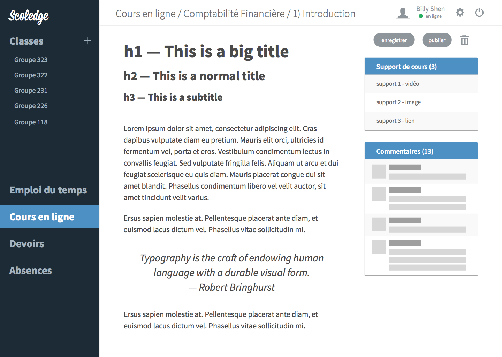
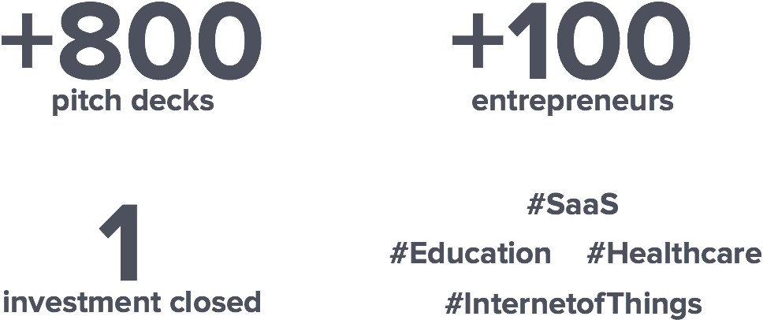
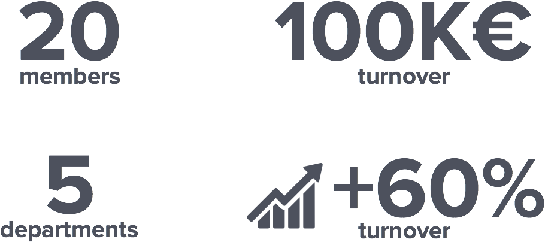
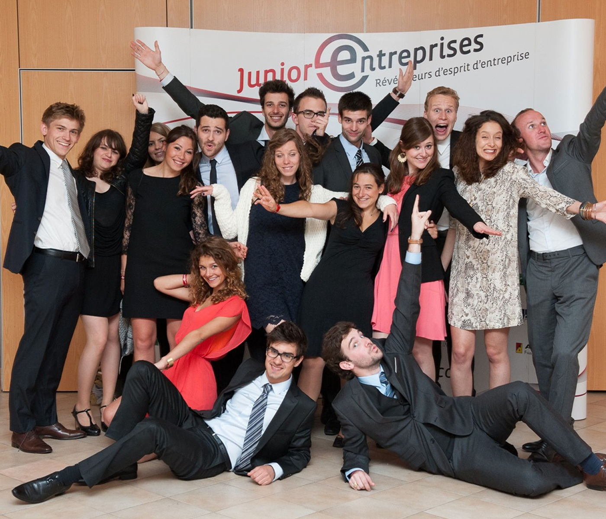

🚀 Here is a quick overview of my work experiences ⬇️
Scoledge
MAR - AUG 2015
A year ago in Paris, I met two engineers, Guillaume and Willy, working on a student app. They needed some help on the business and design sides. As I was thrilled by the challenge and eager to develop my skills, I decided to work with them for several months. I developed their marketing strategy and their user experience (UX).
Scoldege is a web&mobile app that organizes the lives of students and teachers.
I developed a digital marketing strategy based on inbound marketing. I worked on a conversion funnel, lead by the following questions: how to attract target users (blog, social media, SEO, RP), how to convert them (landing page, CTA, forms) & how to close them (CRM, newsletter)?
Marketing conversion funnel for Scoledge
I also worked on the user experience (UX). I first did some user research (interviews) to better understand what teachers and students truly need/want, which helps better defining the product and key features. Then I developed some prototypes in oder to improve the user interface (UI).
UI prototype example for the web app
hub:raum
JULY - DEC 2014
As part of my curriculum, I worked 5 months as an Investment Analyst @ hub:raum in Berlin.
 I screened more than 800 pitch decks, met more than 100 entrepreneurs and digged into Education, Healthcare, Internet of Things and SaaS spaces. This experience helped me better understand the start-ups ecosystem and the role of Venture Capital firms (VCs).
I have always been fascinated by entrepreneurs developing new products and services trying to create some value.
hub:raum, the incubator of Deutsche Telekom, provides seed funding for start-ups that have the potential to fundamentally transform important markets for Deutsche Telekom. Start-ups receive capital to establish market tractions as well as added benefits, such as co-working space, mentoring and introductions to Deutsche Telekom.
L'Atelier BNP Paribas
JAN - JUN 2014
As part of my curriculum, I worked 6 months as an Project Manager @ L’Atelier BNP Paribas in Paris.
I worked with Yoann Jaffré on the 1st BNP Paribas start-up accelerator - a corporate program that helps start-ups develop their business model and grow their product in connection with BNP Paribas. This was a big challenge. On the one hand, we spent lots of time with stakeholders, both internal and external, in order to better understand their needs toward start-ups. On the other hand, we interviewed key actors from the start-up ecosystem in Paris (incubator, corporate, investors, entrepreneurs) to identify what BNP Paribas could bring to the table. Then we designed a value proposition that would suits both start-ups and BNP Paribas Business Units’ needs and we presented it to the Committee. You can find more information there.
I also prototyped a platform to connect start-up with the BNP Paribas Group. We acknowledged that different Business Units were interested in being introduced to start-ups products and services, but didn’t know how to do so. So we decided to create a platform that would create connections between start-ups and BNP Paribas Business Units. We first launched a MVP in order to see wether people would be interested in it. Around 200 users signed up, it was a success for us.
L’Atelier BNP Paribas is the innovation center of BNP Paribas. They develop the following activities: consulting, media, events, and open innovation. I was part of the Open Innovation Lab.
Znappit
JUL - AUG 2013
I did my first internship at Znappit (turned Soap), a start-up that develops a mobile video application that lets people create collaborative video for their events.

Znappit flyer
I was working within the 1st start-up accelerator in France: Le Camping (Numa in Paris. I learned a lot being surrounded by smart entrepreneurs trying to develop their own business. For the first time I was experiencing Lean Start-up, Business Modeling, Product Development, Product-market fit, etc...
Znappit has been co-founded by Victor (Boss), Adrien (Designer) and Nicolas (Geek). As their first intern I worked as a swiss-army knife, doing whatever I could do to help the company grow, which means marketing and communication strategy, product development, business development but also video editing..
I was most passionate about working on the product, trying to answer the following questions: Who is the target user? What do people want/need? How to create value? How to design an addictive experience? I learned a lot from this first experience.
The Znappit Team
Audencia Junior Conseil
JAN - DEC 2013
As a student at Audencia Business School, I was involved in the Junior-Enterprise of the school. This is a student-run association that provides companies with consulting services (Marketing, Finance, Market Research, CSR, Business Plan, etc...).
I was president of the association during a year. I had to build the strategy, set the goals and implement it with the 5 departments (HR, Client Relationship, Communication, Quality and Treasureship). We managed to grow the turnover by +60% from 2012 to 2013, which was a big success for us. Above all, I learned a lot managing a 20 member team during a year.
The Team 😊